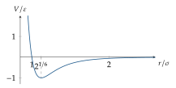
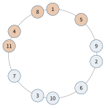

Bab 24
Bentuk Protein
Kuliah bioinformatika struktural saya ikuti pada musim panas 2025. Naskah kuliahnya, yang ditulis Sepp Hochreiter dan Noura Chelbat, bergerak dari ikatan kimia dan sudut torsi ke perbandingan struktur, prediksi struktur sekunder, pemodelan homologi dan threading, prediksi ab initio, dan dinamika molekul. Bagian praktisnya berupa tantangan di sebuah server penilaian: untuk setiap protein, tebak residu mana yang membentuk binding pocket, kantong tempat molekul kecil seperti obat bisa menempel. Prediksi dikirim ke server dan langsung muncul di papan peringkat.
Di Bab 22 kita melihat bahwa gen menyandikan urutan asam amino. Urutan itu baru setengah cerita. Rantai asam amino melipat menjadi bentuk tiga dimensi yang khas, dan bentuk itulah yang menentukan apa yang bisa dilakukan sebuah protein: mengikat oksigen, memotong molekul lain, atau mengirim sinyal melintasi membran sel. Memprediksi bentuk dari urutan adalah salah satu masalah besar biologi selama setengah abad, sampai deep learning mengubahnya.
Dari rantai ke bentuk
Dua puluh jenis asam amino berbeda pada rantai sampingnya: ada yang suka air, ada yang menghindarinya, ada yang bermuatan, ada yang kecil dan lentur seperti glisin, ada yang kaku seperti prolin. Asam amino tersambung lewat ikatan peptida. Karena elektronnya terbagi di antara beberapa atom, ikatan ini bersifat setengah rangkap, sehingga hampir datar dan tidak bisa berputar. Kebebasan rantai utama terletak pada dua sudut putar di setiap residu, sudut torsi \(\phi\) dan \(\psi\). Tidak semua pasangan sudut mungkin, karena atom-atom akan bertabrakan. Peta pasangan yang diizinkan, diagram Ramachandran, menunjukkan beberapa daerah padat yang sesuai dengan heliks dan lembaran.
Struktur protein dijelaskan dalam beberapa tingkat. Struktur primer adalah urutan asam aminonya. Struktur sekunder adalah pola lokal yang berulang, terutama heliks alfa dan lembaran beta. Struktur tersier adalah lipatan tiga dimensi seluruh rantai, dan struktur kuarterner adalah susunan beberapa rantai menjadi satu kompleks. Gaya pendorong utama pelipatan adalah efek hidrofobik: residu yang menghindari air bersembunyi di dalam inti protein, sementara residu yang suka air berada di permukaan. Ikatan hidrogen, jembatan garam, dan gaya van der Waals menstabilkan lipatan yang terbentuk.
Heliks alfa punya geometri yang rapi. Rantai utama melilit dengan sekitar 3,6 residu per putaran, sehingga setiap residu diputar sekitar \(360^\circ/3{,}6=100^\circ\) dari residu sebelumnya. Ikatan hidrogen menghubungkan gugus karbonil residu \(i\) dengan gugus amida residu \(i+4\). Periodisitas \(100^\circ\) punya akibat yang bisa dibaca dari urutan: residu yang berjarak tiga atau empat dalam urutan mengarah ke sisi yang sama dari heliks. Kalau residu hidrofobik muncul dengan pola seperti itu, heliksnya amfipatik, dengan satu sisi suka air dan sisi lain menghindarinya, cocok untuk berbaring di permukaan protein atau membran. Lembaran beta tersusun dari untai-untai yang hampir lurus, yang diikat ikatan hidrogen ke untai tetangganya, baik searah maupun berlawanan arah.
Seberapa sulit pelipatan itu? Kalau setiap residu dari protein seratus residu hanya punya tiga konformasi, jumlah kemungkinannya \(3^{100}\approx5\times10^{47}\). Mencoba satu konformasi setiap \(10^{-13}\) detik pun membutuhkan sekitar \(5\times10^{34}\) detik, jauh lebih lama dari umur alam semesta. Padahal protein nyata melipat dalam mikrodetik sampai detik. Paradoks Levinthal ini menunjukkan bahwa pelipatan bukan pencarian acak, melainkan perjalanan menuruni lanskap energi berbentuk corong yang mengarahkan rantai ke lipatan aslinya.
Membandingkan struktur
Sebelum memprediksi, kita perlu cara mengukur seberapa mirip dua struktur. Ukuran paling umum adalah root mean square deviation setelah kedua struktur disuperposisikan sebaik mungkin, \[\mathrm{RMSD}=\sqrt{\frac1N\sum_{i=1}^N\|\boldsymbol R\boldsymbol{x}_i+\boldsymbol t-\boldsymbol{y}_i\|^2},\] dengan \(\boldsymbol{x}_i\) dan \(\boldsymbol{y}_i\) posisi atom padanan, biasanya atom karbon alfa, dan \(\boldsymbol R\), \(\boldsymbol t\) rotasi dan translasi yang meminimalkan jumlah itu. Translasi terbaik ternyata sederhana: geser kedua struktur sehingga pusat massanya berimpit. Untuk rotasinya, setelah keduanya dipusatkan, jumlah kuadrat bisa diuraikan menjadi \(\sum\|\boldsymbol{x}_i\|^2+\sum\|\boldsymbol{y}_i\|^2-2\sum\boldsymbol{y}_i^\top\boldsymbol R\boldsymbol{x}_i\). Dua suku pertama tidak bergantung pada \(\boldsymbol R\), jadi meminimalkan RMSD sama dengan memaksimalkan \(\sum_i\boldsymbol{y}_i^\top\boldsymbol R\boldsymbol{x}_i=\mathrm{Tr}(\boldsymbol R\boldsymbol H)\) dengan \(\boldsymbol H=\sum_i\boldsymbol{x}_i\boldsymbol{y}_i^\top\). Kalau \(\boldsymbol H=\boldsymbol U\boldsymbol\Sigma\boldsymbol V^\top\) adalah dekomposisi nilai singularnya, maksimum tercapai pada \(\boldsymbol R=\boldsymbol V\boldsymbol U^\top\), dengan koreksi tanda kalau determinannya negatif agar hasilnya rotasi sejati dan bukan pencerminan. Prosedur ini, yang dikenal sebagai algoritme Kabsch, sama dengan langkah inti ICP di Bab 21.
RMSD punya kelemahan: satu bagian yang fleksibel, seperti ekor yang bergoyang, bisa membuat dua struktur yang intinya identik tampak jauh berbeda, dan nilainya cenderung naik dengan panjang protein. TM-score mengatasinya dengan menjumlahkan sumbangan setiap residu yang meluruh dengan jarak, \[\mathrm{TM}=\frac1L\sum_{i=1}^{L}\frac1{1+(d_i/d_0)^2},\] dengan \(d_i\) jarak residu ke-\(i\) setelah superposisi dan \(d_0\) skala jarak yang tumbuh perlahan dengan panjang protein \(L\). Residu yang jauh menyumbang hampir nol, bukan hukuman besar, sehingga satu ekor yang bergoyang tidak merusak skor. Nilainya antara nol dan satu, dan skor di atas sekitar \(0{,}5\) biasanya berarti kedua protein punya lipatan yang sama.
Kalau urutan kedua protein berbeda, padanan residunya pun belum diketahui, dan struktur harus dijajarkan sebelum dibandingkan. DALI, salah satu metode yang dibahas, membandingkan matriks jarak antar residu di dalam masing-masing protein: dua struktur yang mirip punya pola jarak internal yang mirip, apa pun orientasinya di ruang, karena jarak tidak berubah ketika struktur diputar. CE merangkai potongan-potongan pendek yang cocok menjadi penjajaran yang lebih panjang.
Struktur sekunder
Struktur sekunder pertama-tama harus ditetapkan dari struktur yang sudah diukur. Program DSSP melakukannya dengan mencari pola ikatan hidrogen: deretan ikatan \(i\to i+4\) menandai heliks alfa, dan pasangan ikatan antar untai menandai lembaran. Label dari DSSP menjadi data latih untuk prediksi.
Prediksi struktur sekunder memberi setiap residu satu dari tiga label: heliks, lembaran, atau lainnya. Metode Chou–Fasman, yang paling awal, memakai kecenderungan statistik setiap asam amino untuk berada di heliks atau lembaran. Metode GOR menambahkan konteks dengan teori informasi: label sebuah residu ditebak dari asam amino di jendela sekitar delapan residu di kiri dan kanannya. Lompatan besar datang dari dua gagasan lain. Yang pertama adalah memakai profil evolusi dari banyak urutan homolog, yang dikumpulkan dengan pencarian seperti PSI-BLAST, alih-alih satu urutan saja. Posisi yang hanya mentoleransi residu hidrofobik di semua kerabat lebih informatif daripada satu residu dari satu protein. Yang kedua adalah jaringan saraf dua tingkat, yang dibahas rinci di naskah kuliah dan dipakai metode seperti PHD dan PSIPRED. Tingkat pertama memprediksi dari jendela profil, dan tingkat kedua menghaluskan prediksi itu dengan melihat prediksi tetangganya, karena heliks dan lembaran selalu muncul dalam potongan berurutan dan tidak pernah berupa satu residu yang terisolasi.
Kinerjanya diukur dengan Q3, fraksi residu yang labelnya benar, dan akurasi per kelas. Karena Q3 tidak peduli apakah sebuah heliks terpotong-potong menjadi beberapa heliks pendek, ukuran SOV menilai tumpang tindih segmen, bukan residu satu per satu. Naskah kuliah juga mencatat bahwa kebanyakan metode paling kesulitan dengan lembaran beta, karena untai-untainya dipasangkan oleh residu yang berjauhan dalam urutan, informasi yang tidak terlihat dari jendela lokal.
Struktur tiga dimensi
Kalau sebuah protein punya kerabat evolusi yang strukturnya sudah diketahui, kita bisa meminjam strukturnya. Pemodelan homologi mencari kerabat itu dengan pencarian urutan seperti BLAST, menjajarkan urutan baru dengan urutan kerabatnya, menyalin koordinat rantai utama untuk bagian yang terjajar, lalu membangun bagian yang berbeda, seperti lengkungan yang lebih panjang, dan rantai samping. Prinsip dasarnya adalah bahwa struktur dilestarikan evolusi jauh lebih kuat daripada urutan: dua protein dengan identitas urutan tiga puluh persen sering masih berbagi lipatan yang sama.
Kalau tidak ada kerabat yang jelas, threading mencoba memasang urutan baru ke setiap lipatan yang dikenal dan menilai kecocokannya. Penilaiannya memakai potensial kontak statistik, yang dibahas di lampiran naskah kuliah: dari ribuan struktur yang diketahui, dihitung seberapa sering setiap pasangan jenis asam amino bersentuhan dibanding yang diharapkan secara acak, lalu diubah menjadi energi semu dengan logaritma. Energi sebuah susunan adalah jumlah energi semua pasangan yang bersentuhan, \(E=\sum_{\text{kontak }(i,j)}e(a_i,a_j)\). Pasangan dua residu hidrofobik yang sering bersentuhan di inti protein mendapat energi negatif, sehingga susunan yang mengubur residu hidrofobik dinilai baik.
Pendekatan ab initio seperti Rosetta merakit struktur dari potongan-potongan pendek sepanjang tiga sampai sembilan residu yang diambil dari struktur yang dikenal dengan urutan lokal yang mirip, lalu mencari konformasi berenergi rendah dengan Monte Carlo dan aturan penerimaan Metropolis (Bab 28). Dinamika molekul mengintegrasikan persamaan Newton untuk setiap atom dengan medan gaya yang menjumlahkan energi ikatan, sudut, torsi, dan interaksi antar atom yang tidak terikat. Interaksi van der Waals biasanya dimodelkan dengan potensial Lennard-Jones, \[V(r)=4\varepsilon\Big[\Big(\frac\sigma r\Big)^{12}-\Big(\frac\sigma r\Big)^{6}\Big],\] dengan suku pangkat dua belas untuk tolakan ketika atom terlalu dekat dan suku pangkat enam untuk tarikan lemah. Menyamakan turunannya dengan nol, \(-12\sigma^{12}/r^{13}+6\sigma^6/r^7=0\), memberi jarak setimbang \(r=2^{1/6}\sigma\approx1{,}12\,\sigma\), dan memasukkannya kembali memberi kedalaman sumur tepat \(-\varepsilon\) (Gambar 24.1). Interaksi listrik antar muatan ditambahkan dengan hukum Coulomb. Simulasi seperti ini bisa memperhalus struktur dan memperlihatkan bagaimana protein bergerak, tetapi terlalu mahal untuk melipat protein besar dari nol, karena langkah waktunya harus sekitar satu femtodetik untuk mengikuti getaran ikatan.

Untuk membaca urutan secara geometris, Gambar 24.2 memperlihatkan roda heliks: residu-residu heliks alfa dilihat dari ujung sumbunya, masing-masing diputar \(100^\circ\) dari sebelumnya. Residu ke-1, ke-4, ke-5, dan ke-8 jatuh di sisi yang hampir sama, sehingga kalau keempatnya hidrofobik, heliksnya punya satu wajah berminyak.

Perkembangan bidang ini diukur dengan kompetisi CASP, di mana kelompok-kelompok memprediksi struktur yang sudah dipecahkan secara eksperimen tetapi belum dipublikasikan. Naskah kuliah, yang ditulis pada 2007, menutup dengan hasil CASP7, ketika prediksi tanpa kerabat yang jelas masih jauh dari akurat. Selama bertahun-tahun, kemajuannya lambat.
Dari mutasi yang berpasangan ke peta kontak
Gagasan bahwa evolusi menyimpan informasi tentang bentuk protein bisa dibuat kuantitatif. Susun ratusan urutan dari keluarga protein yang sama dalam satu penjajaran, sehingga setiap kolom adalah satu posisi residu. Kalau dua posisi bersentuhan di dalam struktur, asam amino di kedua kolom cenderung berubah bersama. Ukuran paling sederhananya adalah mutual information antara dua kolom, \(\mathrm{MI}(i,j)=\sum_{a,b}p_{ij}(a,b)\log_2\frac{p_{ij}(a,b)}{p_i(a)p_j(b)}\), yaitu KL antara distribusi bersama dan hasil kali marginalnya (Lampiran B). Misalkan dalam empat urutan, kolom \(i\) dan \(j\) berisi pasangan (A,L), (A,L), (G,V), dan (G,V): setiap kali posisi \(i\) berisi A, posisi \(j\) berisi L, sehingga mengetahui satu kolom memberi tahu kolom lain sepenuhnya, dan MI-nya satu bit. Kalau pasangannya (A,L), (A,V), (G,L), dan (G,V), kedua kolom independen, dan MI-nya nol.
Masalahnya adalah korelasi tidak langsung. Kalau posisi A bersentuhan dengan B, dan B bersentuhan dengan C, maka A dan C juga tampak berkorelasi walau tidak pernah bersentuhan, sama seperti dua anak dari orang tua yang sama tampak berkorelasi tanpa saling memengaruhi. Direct-coupling analysis (Morcos dkk. 2011) memisahkan keduanya dengan menyesuaikan model statistik global atas seluruh penjajaran, sejenis model Potts, sehingga setiap pasangan hanya mendapat sumbangan yang tidak bisa dijelaskan oleh pasangan lain. Hasilnya adalah peta kontak yang cukup akurat untuk merekonstruksi lipatan global banyak keluarga protein hanya dari urutan.
Peta kontak adalah matriks \(L\times L\), sehingga bisa diperlakukan seperti gambar, dan sejak pertengahan 2010-an jaringan konvolusi dilatih untuk meramalkan kontak, bahkan jarak antar residu, dari fitur-fitur penjajaran. Pola-pola khas dalam peta itu mudah dikenali: pita sejajar diagonal untuk heliks, karena residu \(i\) bersentuhan dengan \(i+3\) dan \(i+4\), serta pita tegak lurus diagonal untuk untai beta yang saling berlawanan arah. Langkah dari meramal peta kontak ke meramal koordinat langsung adalah langkah yang diambil AlphaFold.
AlphaFold
Pada CASP14 tahun 2020, AlphaFold2 (Jumper dkk. 2021) memprediksi banyak struktur dengan akurasi yang mendekati percobaan. Gagasan kuncinya sudah lama dikenal dalam bioinformatika, tetapi dimanfaatkan dengan cara baru. Kalau dua residu bersentuhan di dalam struktur, mutasi pada salah satunya sering diikuti mutasi pengimbang pada yang lain, supaya kontaknya tetap terjaga. Jadi pola mutasi yang berkorelasi dalam penjajaran banyak urutan homolog adalah petunjuk tentang residu mana yang berdekatan di ruang tiga dimensi. Ini profil evolusi dari prediksi struktur sekunder, dibawa ke tingkat pasangan residu.
AlphaFold2 memproses dua representasi sekaligus: penjajaran banyak urutan, dan representasi pasangan yang menyimpan hubungan antara setiap pasangan residu. Blok Evoformer bertukar informasi di antara keduanya dengan attention, termasuk operasi yang menegakkan konsistensi geometris, misalnya bahwa jarak-jarak di antara tiga residu harus memenuhi ketaksamaan segitiga. Modul struktur kemudian menempatkan setiap residu sebagai benda kaku di ruang dengan attention yang invarian terhadap rotasi dan translasi global, gagasan dari Bab 13. Model ini juga mengeluarkan perkiraan keyakinannya sendiri untuk setiap residu, sehingga pengguna tahu bagian mana yang bisa dipercaya dan bagian mana, sering ujung-ujung yang tidak berstruktur, yang sebaiknya diabaikan. AlphaFold3 (Abramson dkk. 2024) memperluasnya ke kompleks protein dengan DNA, RNA, dan molekul kecil, dengan modul struktur berbasis difusi (Bab 15) yang membangkitkan koordinat atom secara langsung.
Hadiah Nobel Kimia 2024 sebagian diberikan untuk prediksi struktur protein ini, pengakuan bahwa sebuah metode machine learning telah menyelesaikan masalah ilmiah yang mendasar.
Binding pocket dan obat
Untuk penemuan obat (Bab 23), yang paling penting sering bukan seluruh struktur, melainkan kantong tempat obat menempel. Tantangan di kuliah merumuskan prediksi binding pocket sebagai klasifikasi setiap residu: masuk kantong atau tidak. Data latihnya berupa daftar residu kantong untuk setiap protein, dan prediksi dikirim dalam format yang sama. Fiturnya bisa berasal dari urutan, dari struktur tiga dimensi seperti seberapa terkubur sebuah residu dan bentuk permukaan di sekitarnya, atau dari embedding model bahasa protein.
Karena residu kantong hanya sebagian kecil dari seluruh protein, akurasi biasa menyesatkan, persis seperti pelajaran tentang kelas tidak seimbang di Bab 1. Kalau sebuah protein punya 300 residu dan 15 di antaranya membentuk kantong, model yang selalu menjawab “bukan kantong” sudah benar 95 persen. Ukuran yang lebih jujur membandingkan himpunan residu tebakan dengan himpunan yang benar. Kalau model menebak 12 residu dan 9 di antaranya benar, presisinya \(9/12=0{,}75\), recall-nya \(9/15=0{,}60\), dan F1-nya \(2\cdot0{,}75\cdot0{,}60/(0{,}75+0{,}60)\approx0{,}67\). Pengetahuan kimia membantu di sini: kantong biasanya berupa cekungan di permukaan, dan residu-residunya berdekatan di ruang walau berjauhan dalam urutan, sehingga prediksi yang tersebar acak di permukaan protein hampir pasti salah.
Perkembangan riset
Setelah prediksi struktur, perhatian bergeser ke desain. ESMFold (Lin dkk. 2023) menunjukkan bahwa model bahasa protein dengan sampai 15 miliar parameter menyimpan cukup informasi struktur untuk memprediksi struktur atom langsung dari satu urutan, tanpa penjajaran banyak urutan, dan jauh lebih cepat. Kecepatannya memungkinkan prediksi struktur lebih dari 617 juta protein metagenomik. RFdiffusion (Watson dkk. 2023) menyetel jaringan prediksi struktur RoseTTAFold sebagai model difusi untuk rangka protein, sehingga bisa membangkitkan rangka baru yang mengikat target tertentu atau membentuk susunan simetris, dan ratusan desainnya diuji di laboratorium. ProteinMPNN (Dauparas dkk. 2022) menyelesaikan langkah berikutnya: diberikan sebuah rangka, cari urutan asam amino yang akan melipat ke bentuk itu, dengan message passing pada graf residu. Pada rangka protein alami, urutan aslinya dipulihkan 52 persen, dibanding 33 persen untuk Rosetta.
ESM3 (Hayes dkk. 2025) menggabungkan urutan, struktur, dan fungsi dalam satu model bahasa generatif. Salah satu protein fluoresen yang dibangkitkannya, setelah disintesis, ternyata bersinar terang walau hanya 58 persen identik dengan protein fluoresen yang dikenal, jarak yang menurut perkiraan penulisnya setara dengan sekitar 500 juta tahun evolusi. Alur kerja yang terbentuk, rangka dari model difusi, urutan dari model graf, lalu pemeriksaan dengan prediksi struktur, adalah gabungan hampir semua bab di bagian buku ini.
Catatan sumber.
Bab ini mengikuti kuliah Structural Bioinformatics dan naskah Bioinformatics III (latar kimia dan fisika, struktur sekunder dan tersier, perbandingan dan penjajaran struktur, prediksi struktur sekunder dan evaluasinya, pemodelan homologi dan threading, prediksi ab initio dan dinamika molekul), beserta tantangan prediksi binding pocket. Perkembangan terbaru diambil dari makalah AlphaFold (Jumper dkk. 2021; Abramson dkk. 2024).